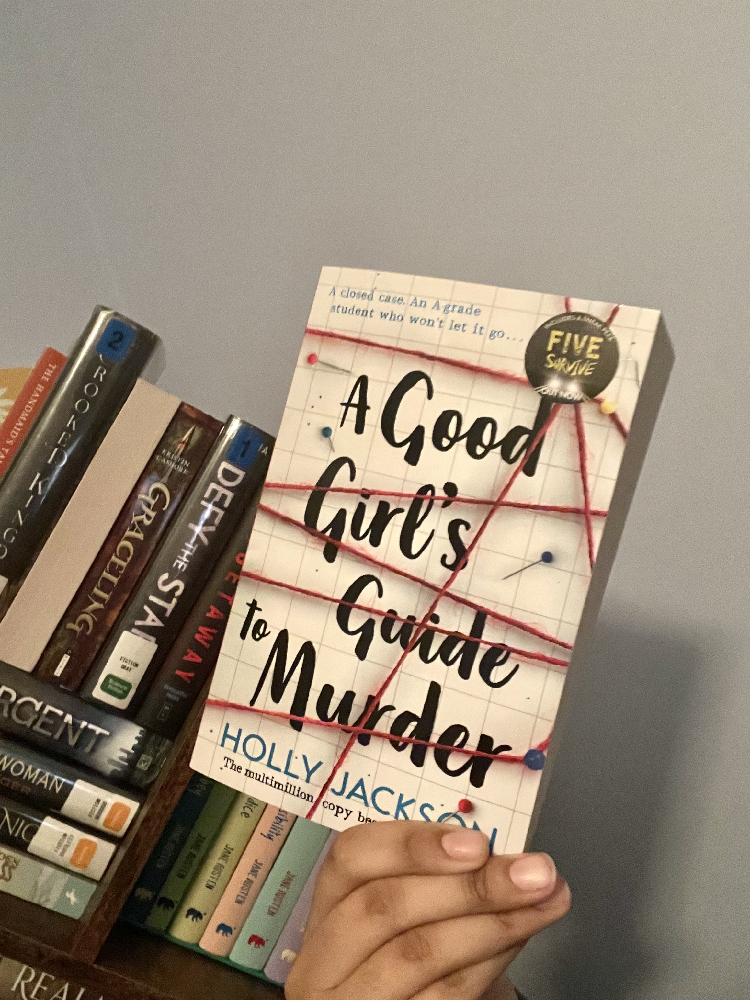
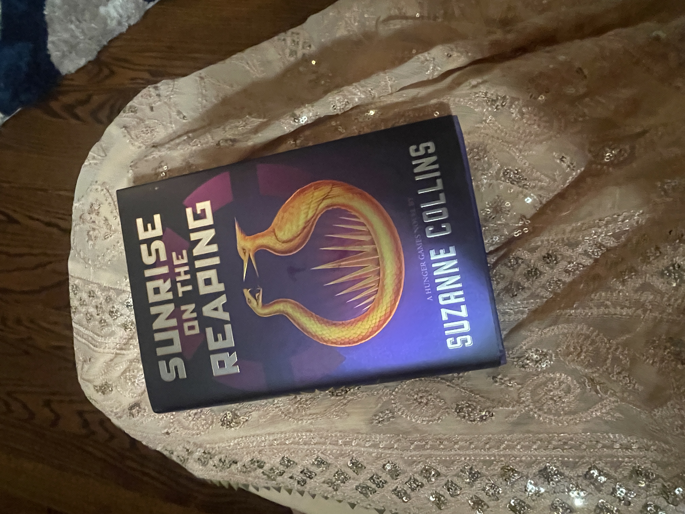
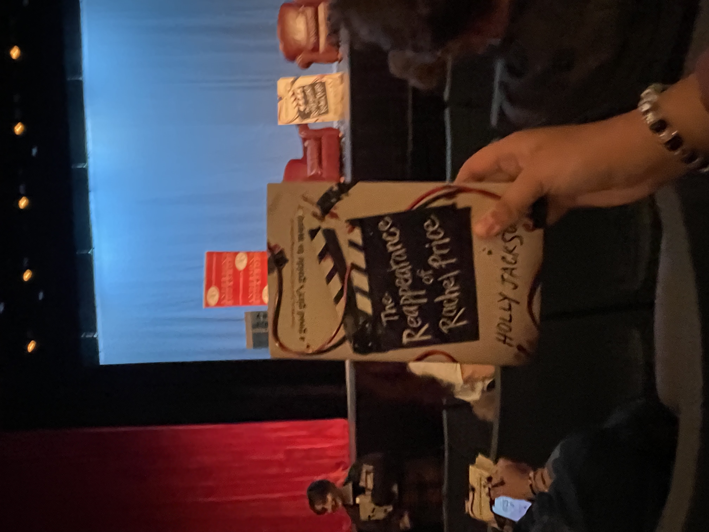
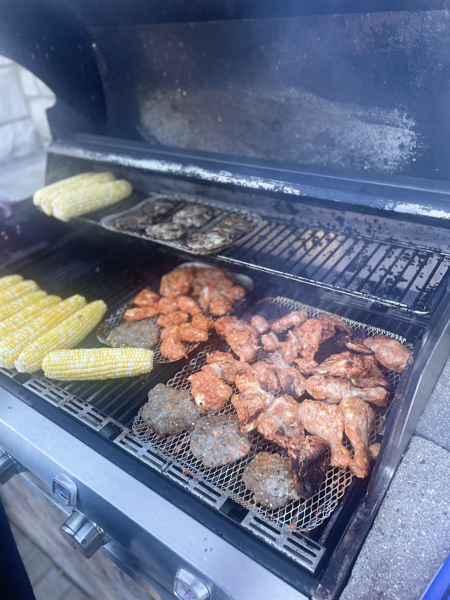
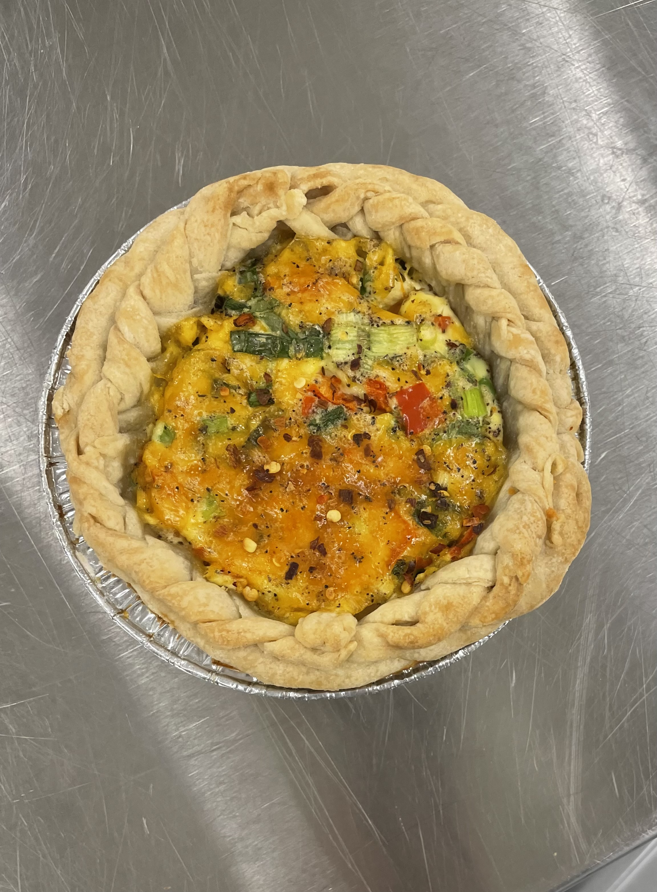

Hello! I'm Ayesha, and I'm a junior in high school.
I'm planning to go into engineering in college! I'm a part of my school's policy debate and math team, Student Council, Muslim Student Association, Women in STEM Club, Astronomy Club, and more!
get to know me!
about me!



One of my favorite hobbies is reading! I enjoy mystery, thriller, dystopian, and fantasy novels. These are some of my favorites!



I also really enjoy cooking and baking!